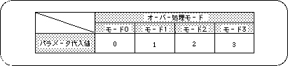

Return to previous page | Return to menu | Go to next page
● Select screen over processing mode
Select the processing to be performed when drawing on the rotary scroll screen exceeds the display area. This is called screen over processing. There are four modes for screen over processing.
Mode 0: Outside the area, the image set in the display area is repeated. Mode 1: The character pattern specified by the screen over PN register is repeated outside the area. Mode 2: All areas outside the area are transparent. Mode 3: The area is forcibly clipped to “0 ≦ X ≦ 512, 0 ≦ Y ≦ 512” and everything outside the area is made transparent.
Use the library function “slOverRA, RB” to select screen overprocessing.
